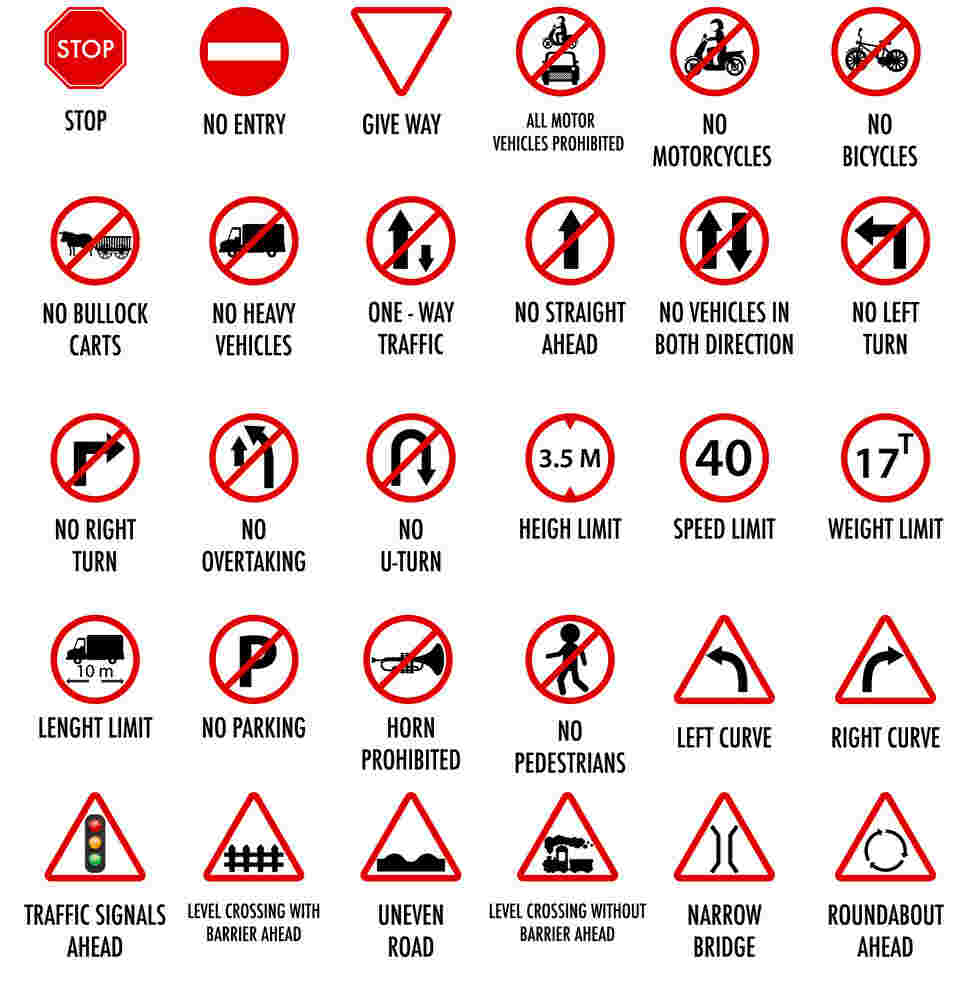

Welcome to our mini-blog exploring the differences in traffic
rules between India and Europe.
Whether you're a local or a traveler, understanding the traffic
norms is crucial for a safe journey.
After coming up with various ideas and topics that all fell
through I decided I wanted to write about a few observations
I have made while driving in India and driving in the UK. How is
it that a country that borrowed all of its driving rules
from the UK, from driving on the left side of the road to the
construction of roundabouts, drive so differently?
Key Differences
| Aspect |
India |
Europe |
| Driving Side |
Left |
Right |
| Roundabouts |
Less common |
Common |
| Speed Limits |
Varies |
Varies |
| License Requirements |
Specific to each state |
Harmonized across regions |
Remember, road safety is a shared responsibility. Always drive
responsibly and follow the rules to ensure everyone's safety.
India Traffic Signs

Europe Traffic Signs
Importance of Traffic Signs in Change of Driving Locations
Drivers often take traffic signs for granted and don’t think too
deeply about their importance. But without them, there would be terrible
consequences, like a higher risk of accidents and injury, and confusion on the
road. While the importance of traffic rules and signs might appear simple,
there are actually many reasons why rules and signs are important to all road
users, not just drivers. Let’s look at 7 Reasons for the Importance of
Traffic Rules and Signs:
- Reduce Accidents and Injuries. The key
importance of traffic rules and signs is for maintaining safety.
- Provide Consistent Rules. Having consistent
and clearly communicated rules ensures that every road user is aware of them
and can adhere to them.
- They Help Direct You to Where You Are Going.
If you’re not familiar with the route you are taking or going somewhere you
haven’t been before, signs help to direct you to your destination.
- They Warn Drivers About Obstacles That Aren't
Obvious. While it would be nice to be aware of every single thing on
the road ahead, sometimes obstacles can be hidden from plain view or in blind
spots on the road.
- They Manage Traffic Flow. Traffic flow is not
only important for safety but also for the efficient movement of traffic.
- They’re Important for New Drivers. Driving
can feel second-nature to experienced drivers, but for new or inexperienced
drivers, they will need to work to recognise each and every traffic rule and
sign.
- They Help Protect Cyclists and Pedestrians.
Vehicle drivers are not the only road users. There are a range of road users,
like cyclists and pedestrians, that also rely on traffic rules and signs.
Europe Traffic Fines and Penalties
References and Links
Comments